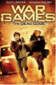

War Games
Au sortir de la guerre froide, les avancées informatiques sont conséquentes. Découvrez les dangers de cette évolution caractérisée par l’intelligence artificielle et des ordinateurs quantiques grâce au film War Games.
Une guerre factice
On y retrouve David Lightman (incarné par Matthew Broderick), un jeune étudiant qui a pour hobby l’informatique. En effet, il est tellement obnubilé par cette passion qu’il a développée des capacités impressionnantes de pirate informatique. Lors d’une soirée avec son amie Jennifer, il essaie de pénétrer dans un jeu vidéo protégé par une sécurité. En réalité, David essaie de craquer les codes d’une simulation de 3e Guerre mondiale réalisée par l’armée américaine. Et ne se doutant pas des conséquences que cela va produire, David lance une partie de « Guerre Thermonucléaire Globale ».
L’ordinateur quantique de l’armée américaine (qui s’appelle Joshua) lance alors une simulation qui apparaît réel aux yeux des autorités américaines… Ils s’apprêtent donc à se défendre de centaines d’unités militaires russes alors qu’elle n’existe pas. Après s’être échappé de la base où il a été enfermé, David ira retrouver le professeur Stephen Felken pour qu’il arrête la simulation de son supercalculateur. L’histoire se finit bien grâce à l’intelligence du jeune pirate et Joshua lui proposera même une partie d’échec.
Conséquences morales
Nommé 3 fois aux Oscars grâce au contenu qualitatif qu’il propose, ce film nous pousse à regarder le progrès numérique d’un autre œil. Même sorti il y a 37 ans, les problèmes qu’il soulève restent actuelles. Les armées de chaque pays sont de plus en plus informatisées ,nos vies deviennent elles aussi numérisées et tout ça n’est pas forcément élément à nous rassurer. La pollution que nous générons devient de plus en plus importantes avec les nombreux appareils informatiques qui nous entourent.
Affiche du film War Games en 1983
Conclusion
Dans ce sens, il faudrait se protéger et limiter nos données ou les supprimer… C’est là qu’est produit la pollution numérique, nos données sauvegardées sont stockées sur des disques durs dans des datacenters. Ces énormes structures doivent rafraîchir leur système pour éviter une surchauffe et un arrêt complet des serveurs.
Mais cette mise à température constante rime avec « Pollution constante », l’émission de gaz à effet de serre produite pas ces datacenters est de plus en plus conséquente ; et la situation ne s’arrangera pas dans le futur. Le supercalculateur est probablement source d’une grande production de données avec tous ses scénarios de guerre (si on s’appuie sur le film). De plus, nos données sont stockées, mais sont-elles bien protégées ? Les IAs sont-elles responsables du réchauffement climatique ? Peut-on agir de notre côté pour pouvoir limiter cette croissance exponentielle de pollution numérique ?
Galerie de films et séries similaires
Tron réalisé par Steven Lisberger (1982)

Hackers réalisé Iain Softley (1995)

War Games 2 réalisé Stuart Gillard (2008)
